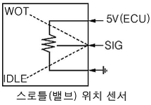
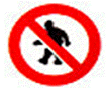

자동차정비기능사 (2010-10-30 기출문제)
1과목: 자동차공학
1. 4실린더 기관에서 피스톤당 3개의 링이 있고, 1개의 링의 마찰력을 0.5kgf라면 총 마찰력 kgf는?
- 1
- 1.5
- 6
- 12
(정답률: 57%)

2. O2센서 점검 관련 사항으로 적절치 못한 것은?
- 기관을 워밍업한 후 점검한다.
- .출력전압을 쇼트시키지 않는다.
- .출력전압 측정은 아날로그 시험기로 측정한다.
- O2센서의 출력전압이 규정을 벗어나면 공연비 조정계통에 점검이 필요하다.
(정답률: 70%)
3. 엔진의 출력성능을 향상시키기 위하여 제동평균 유효압력을 증대시키는 방법을 사용하고 있다. 이중 틀린 것은?
- 배기밸브 직후 압력인 배압을 낮게 하여 잔류 가스량을 감소시킨다.
- 흡·배기 때의 유동저항을 저감시킨다.
- 흡기 온도를 흡기구의 배치 등을 고려하려 가급적 낮게 한다.
- 흡기압력을 낮추어서 흡기의 비중량을 작게한다.
(정답률: 57%)
4. 공회전 속도조절 장치로 볼 수 없는 것은?
- 로터리밸브 액추에이터
- ISC(IdleSpeedControl)액추에이터
- ISA(IdleSpeedAdjust)스텝 모터
- 아이들 스위치
(정답률: 55%)
5. LPG연료장치에서 베이퍼라이져의 역할이 아닌 것은?
- 기화
- 무화
- 감압
- 압력조절
(정답률: 58%)
6. 전자제어 가솔린 분사기관에 냉시동용 인젝터가 설치된 목적은?
- 고속시 출력증대
- 원활한 급가속
- 저온 시동성 향상
- 배기가스 정화대책
(정답률: 76%)
7. 가솔린 자동차의 배기관에서 배출되는 배기가스와 공연비와의 관계를 잘못 설명한 것은?
- CO는 혼합기가 희박할수록 적게 배출된다.
- HC는 혼합기가 농후할수록 많이 배출된다.
- NOx는 이론 공연비 부근에서 최소로 배출된다.
- CO2는 혼합기가 농후할수록 적게 배출된다.
(정답률: 63%)
8. 가솔린 전자제어 기관에서 사용되는 공기유량 센서의 종류가 아닌 것은?
- 볼 순환식 센서
- 베인식 센서
- 칼만 와류식 센서
- 열선식 센서
(정답률: 72%)
9. 후퇴등은 등화의 중심점이 공차상태에서 어느범위가 되도록 설치하여야 하는가?
- 지상 15cm 이상 ~100cm 이하
- 지상 20cm 이상 ~110cm 이하
- 지상 15cm 이상 ~95cm 이하
- 지상 25cm 이상 ~120cm 이하
(정답률: 53%)
10. 디젤엔진에서 개방형 분사노즐의 장점과 관련이 없는 것은?
- 노즐 스프링,니이들 밸브 등 운동 부분이 없다.
- 분사 파이프 내에 공기가 머물지 않는다.
- 분사 시작 때의 무화 정도가 낮다.
- 구조가 간단하다.
(정답률: 50%)
11. LPG기관에서 액체를 기체로 변환시켜 주기 위한 목적으로 된 장치로 맞는 것은?
- 솔레노이드 스위치
- 베이퍼라이져
- 봄베
- 프리히터
(정답률: 82%)
12. 4행정 4기통 가솔린기관에서 점화순서 1-3-4-2 일 때,1번 실린더가 흡입행정을 한다면 다음 중 맞는 것은?
- 3번 실린더는 압축행정를 한다.
- 4번 실린더는 동력행정를 한다.
- 2번 실린더는 흡기행정를 한다.
- 2번 실린더는 배기행정를 한다.
(정답률: 72%)
13. 디젤기관의 인터쿨러 터보(intercoolerturbo) 장치는 어떤 효과를 이용한 것인가?
- 압축된 공기의 밀도를 증가시키는 효과
- 압축된 공기의 온도를 증가시키는 효과
- 압축된 공기의 수분을 증가시키는 효과
- 배기가스를 압축시키는 효과
(정답률: 68%)
14. 전자제어기관에서 스로틀위치 센서의 고장일 때 나타나는 결과로 틀린 것은?
- 시동이 꺼진다.
- 가속 응답성이 저하된다.
- 자동변속기에서 변속시점이 달라진다.
- 정상적으로 주행이 불량하다.
(정답률: 74%)
15. 기관의 윤활장치에서 유압조절밸브는 어떤 작용을 하는가?
- 기관의 부하량에 따라 압력을 조절한다.
- 기관 오일량이 부족할 때 압력을 상승시킨다.
- 불충분한 오일량을 방지한다.
- 유압이 높아지는 것을 방지한다.
(정답률: 57%)
16. 실린더의 지름이 100mm,행정이 100mm인 1기통 기관의 배기량은?
- 78.5cc
- 785cc
- 1000cc
- 1273cc
(정답률: 67%)
17. 기관의 옥탄가 측정에서 이소옥탄70%,노말헵탄 30%일 때 옥탄가는?
- 30%
- 60%
- 70%
- 90%
(정답률: 85%)
18. 가변흡기장치 (variableinductioncontrolsystem)의 설치 목적으로 가장 적당한 것은?
- 최고속 영역에서 최대출력의 감소로 엔진보호
- 공전속도 증대
- 저속과 고속에서 흡입효율 증대
- 엔진 회전수증대
(정답률: 78%)
19. 기관의 실린더 내경 75mm,행정 75mm,압축비가 8:1인 4실린더 기관의 총 연소실 체적은?
- 239.38cc
- 159.76cc
- 189.24cc
- 318.54cc
(정답률: 55%)
20. 배기장치를 분해시 안전 및 유의 사항이다. 틀린 것은?
- 배기장치를 분해하기 전 엔진을 가동하여 엔진이 정상 온도가 되도록 한다.
- 배기 장치의 각 부품을 조립할 때는 배기가스 누출이 도지 않도록 주의하여 조립하도록 한다.
- 분해조립 할 때 개스킷은 새 것을 사용하여야 한다.
- 조립 후 기관을 작동시킬 때 배기파이프의 열에 의해 다른 부분이 손상되지 않도록 접촉여부를 점검한다.
(정답률: 79%)
2과목: 자동차정비 및 안전기준
21. 스로틀(밸브)위치 센서에 그림과 같이 5V의 전압이 인가 된다.스로틀(밸브)위치 센서가 완전히 개방시는 몇 V의 전압이 출력측(시그널)에 감지 되는가?

- 0V
- 2 ~ 3V
- 4 ~ 5V
- 12V
(정답률: 65%)
22. 디젤기관에서 딜리버리 밸브 작용에 대한 설명으로 틀린 것은?
- 연료의 역류를 방지한다.
- 고압파이프 안의 잔압을 유지한다.
- 분사압력을 조절하는 밸브이다.
- 연료분사시 후적을 방지한다.
(정답률: 45%)
23. 배기가스의 일부를 배기계에서 흡기계로 재순환시켜 질소산화물 생성을 억제시키는 장치는?
- 퍼지컨트롤 밸브
- 차콜캐니스터
- EGR
- VVT
(정답률: 89%)
24. 후축에 9890kgf의 하중이 작용될 때 4개 타이어를 장착하였다면 타이어 한 개당 받는 하중은?
- 약 2473kgf
- 약 2770kgf
- 약 3473kgf
- 약 3770kgf
(정답률: 80%)
25. 자동변속기에 차속센서와 함께 연산하여 변속시기를 결정하는 주요 입력신호는?
- 캠축 포지션센서
- 스로틀 포지션센서
- 유온센서
- 수온센서
(정답률: 82%)
26. 전자제어 자동변속기에 장착된 차속센서 방식으로 옳은 것은?
- TR(트랜지스터)
- 스로틀 포지션센서
- 유온센서
- 홀 센서
(정답률: 42%)
27. 전자제어 현가장치(ECS)에서 브레이크 작동 여부를 검출하여 ECU로 입력시키는 요소는?
- 휠 스피드 센서
- 아이들 스위치
- 조향각 센서
- 제동등 스위치
(정답률: 45%)
28. 전자제어 제동장치(ABS)에 대한 설명으로 틀린 것은?
- 전륜은 조향 바퀴이므로 후륜에만 장착이 가능하다.
- 후륜의 조기고착에 의한 옆 방향 미끄러짐을 최소화 시킨다.
- 노면의 상태가 변화하여도 최적의 제동효과를 얻기 위한 것이다.
- 타이어의 미끄럼(slip)률이 마찰계수 최고치를 초과 하지 않도록 한다.
(정답률: 81%)
29. 자동변속기의 토크컨버터에서 작동유체의 방향을 변환시키며 토크 증대를 하기 위한 것은?
- 스테이터
- 터빈
- 오일펌프
- 유성기어
(정답률: 62%)
30. 종감속 장치(베벨기어식)에서 구동피니언과 링기어의 접촉 상태 점검 방법으로 틀린 것은?
- 힐 접촉
- 페이스 접촉
- 토(toe)접촉
- 캐스터 접촉
(정답률: 47%)
31. 공기식 브레이크 장치에서 공기압을 기계적 힘으로 바꾸어 라이닝을 움직이게 하는 것은?
- 푸시로드
- 하이드롤릭 피스톤
- 캠
- 휠 실린더
(정답률: 39%)
32. 수동변속기에서 기어변속 체결시 기어의 이중 물림을 방지하기 위한 장치는?
- 파킹볼 장치
- 인터록 장치
- 오버드라이브 장치
- 록킹볼 장치
(정답률: 78%)
33. 드럼식 제동장치에서 자기 작동 작용을 하는 슈는?
- 리딩 슈
- 앵커 슈
- 트레일링 슈
- 패드 슈
(정답률: 70%)
34. 유압을 이용한 전자제어 조향장치형식에서 차량 속도와 조향력에 필요한 정보에 의해 고속과 저속모드에 필요한 유량으로 제어하는 방식?
- 공기제어식
- 전동펌프식
- 유압반력제어식
- 속도감응식
(정답률: 64%)
35. 조향장치가 갖추어야 할 조건으로 틀린 것은?
- 조향 조작이 주행 중의 충격을 적게 받을 것
- 조향 핸들의 회전과 바퀴의 선회차가 클 것
- 회전 반경이 작을 것
- 조작하기 쉽고 방향 전환이 원활하게 이루어질 것
(정답률: 81%)
36. 자동차가 도로를 달릴 때 발생하는 저항 중에서 자동차의 중량과 관계없는 것은?
- 공기 저항
- 구름 저항
- 구배 저항
- 가속 저항
(정답률: 61%)
37. 구동력을 크게 하려면 축 회전력과 구동바퀴의 반경은 어떻게 되어야 하는가?
- 축 회전력 및 바퀴의 반경 모두 커져야 한다.
- 바퀴의 반경과 관계가 없다.
- 반경이 큰 바퀴를 사용한다.
- 반경이 작은 바퀴를 사용한다.
(정답률: 53%)
38. 뒤 현가방식의 독립 현가식중 세미 트레일링 암(semitrailingarm)방식의 단점으로 틀린 것은?
- 공차시와 승차시 캠버가 변한다.
- 종 감속기어가 현가 암 위에 고정되기 때문에 그 진동이 현가장치로 전달되므로 차단할 필요성이 있다.
- 구조가 복잡하고 가격이 비싸다.
- 차실 바닥이 낮아진다.
(정답률: 47%)
39. 클러치 압력판 스프링의 총 장력이 90kgf이고,레버비가 6:2일 때 클러치를 조작하는데 필요한 힘은?
- 20kgf
- 30kgf
- 40kgf
- 50kgf
(정답률: 73%)
40. 앞바퀴 정렬 요소 중 킹핀 경사각과 캠버각을 합한 것을 무엇이라 하는가?
- 조향각
- 협각
- 최소 회전각
- 캐스터각
(정답률: 45%)
3과목: 안전관리
41. 에어컨 냉방사이클의 작동 순서로 맞는 것은?(오류 신고가 접수된 문제입니다. 반드시 정답과 해설을 확인하시기 바랍니다.)
- 압축기 ->증발기 ->응축기 ->팽창밸브
- 팽창밸브 ->증발기 ->압축기 ->응축기
- 응축기 ->증발기 ->압축기 ->팽창밸브
- 증발기 ->팽창밸브 ->응축기 ->압축기
(정답률: 47%)
42. 어떤 기준 전압 이상이 되면 역방향으로 큰 전류가 흐르게 된 반도체는?
- PNP형 트랜지스터
- NPN형 트랜지스터
- 포토 다이오드
- 제너 다이오드
(정답률: 71%)
43. 외부 온도에 따라 저항값이 변하는 소자로서 수온센서등 온도 감지용으로 쓰이는 반도체는?
- 게르마늄(germanium)
- 실리콘(silicone)
- 서미스터(thermistor)
- 인코넬(inconel)
(정답률: 82%)
44. 5A의 전류로 연속 방전하여 방전 종지 전압에 이를때까지 30시간이 걸렸다,이 축전비 용량은?
- 6Ah
- 15Ah
- 60Ah
- 150Ah
(정답률: 58%)
45. 오버런닝클러치 형식의 기동 전동기에서 기관이 시동된 후 계속해서 스위치를 작동시키면 발생 될 수 있는 현상으로 가장 적합한 것은?
- 기동 전동기의 전기자가 타기 시작하여 곧 바로 소손된다.
- 기동 전동기의 전기자는 무부하 상태로 공회전하고 피니언기어는 고속회전하거나 링기어와 미끄러지면서 소음을 발생한다.
- 기동 전동기 전기자가 정지된다.
- 기동 전동기의 전기자가 기관회전보다 고속회전 한다.
(정답률: 74%)
46. 발전기 출력이 낮고 축전지 전압이 낮을 때, 원인으로 해당 되지 않는 것은?
- 충전회로에 높은 저항이 걸려있을 때
- 발전기 조정전압이 낮을 때
- 다이오드의 단락 및 단선이 되었을 때
- 축전지 터미널에 접촉이 불량할 때
(정답률: 42%)
47. 이모빌라이져 장치에서 엔진 시동을 제어하는 장치가 아닌 것은?
- 점화장치
- 충전장치
- 연료장치
- 시동장치
(정답률: 66%)
48. 전자제어점화장치에서 점화 시기는 다음과 같은 센서의 신호에 의해 제어된다.틀린 것은?
- 크랭크 각 센서
- 대기압력 센서
- 산소 센서
- 시동장치
(정답률: 34%)
49. 일반적으로 에어 백(AirBag)에 가장 많이 사용되는 가스(gas)는?
- 수소
- 이산화탄소
- 질소
- 산소
(정답률: 86%)
50. 와셔 연동 와이퍼의 제어 목적은?
- 와셔 액을 더 많이 배출하기 위해서이다.
- 연료를 절약하기 위해서이다.
- 와이퍼를 빠르게 작동하기 위해서이다.
- 와이퍼 스위치를 별도로 작동하여야 하는 불편을 해소하기 위해서이다.
(정답률: 79%)
51. 다이얼 게이지 취급시 안전사항으로 틀린 것은?
- 작동이 불량하면 스핀들에 주유 혹은 그리스를 발라서 사용한다.
- 분해 청소나 조정은 하지 않는다.
- 다이얼 인디케이터에 충격을 가해서는 안된다.
- 측정시 측정물에 스핀들을 직각으로 설치하고 무리한 접촉은 피한다.
(정답률: 78%)
52. 산업안전·보건 표지의 종류와 형태에 그림이 나타내는 표시는?

- 접촉금지
- 출입금지
- 탑승금지
- 보행금지
(정답률: 71%)
53. 정비용 기계의 검사,유지,수리에 대한 내용으로 틀린 것은?
- 청소 및 급유 시에는 서행한다.
- 동력기계의 이동장치에는 동력 차단장치를 설치한다.
- 동력 차단장치는 작업자 가까이에 설치한다.
- 청소할 때는 운전을 정지한다.
(정답률: 80%)
54. 작업현장에서 기계의 안전조건이 아닌 것은?
- 덮개
- 안전장치
- 안전교육
- 보전성의 개선
(정답률: 48%)
55. 물체를 잡을 때 사용하고,조(jaw)에 세레이션이 설치되어 있어서 미끄러지지 않으며 물체의 크기에 따라 조를 조절할 수 있는 공구는?
- 와이어 스트립퍼
- 알렌 렌치
- 바이스 플라이어
- 복스 렌치
(정답률: 62%)
56. 고속 절단기로 파이프의 절단작업 중 안전 사항에 어긋난 것은?
- 보안경을 착용하여 작업을 한다.
- 절단 후 절단면은 숫돌의 측면을 이용해서 연마한다.
- 파이프는 바이스로 고정시켜 작업을 한다.
- 안전커버를 반드시 부착한다.
(정답률: 77%)
57. 축전지 시험기의 취급에 대한 주의사항으로 틀린 것은?
- 시험기는 진동을 주지 말고 축전지의 극성을 바르게 해야 한다.
- 시험기의 부하를 최대가 된 상태로 해서 배터리와 연결한다.
- 축전지는 충분히 충전되어 전압강하가 없는 것을 사용해야 한다.
- 축전지 극성을 연결할 시는 전원스위치가 꺼진 상태에서 한다.
(정답률: 84%)
58. 기중기로 중량물 등을 운반시 안전한 작업방법으로 틀린 것은?
- 운전자는 신호자의 지시에 따라 운전한다.
- 제한 하중을 조금 넘는 중량물은 제동장치가 감당할 수 있는지를 확인 후 작업해야 한다.
- 급격한 가속이나 정지를 피하고,추락방지를 위해 주의해서 작업한다.
- 달아 올리기는 중량물의 중심을 잘 맞추어 옆 방향으로 힘이 가해지지 않도록 한다.
(정답률: 82%)
59. 실린더 헤드의 밸브장치 정비 시 안전작업 방법 으로 틀린 것은?
- 밸브 탈착 시 리테이너 록크는 반드시 새것으로 교환한다.
- 밸브 탈착 시 스프링이 튀어 나가지 않도록 한다.
- 분해된 밸브에 표시를 하여 바뀌지 않도록 한다.
- 분해조립 시 밸브 스프링 전용공구를 사용한다.
(정답률: 76%)
60. ECS(전자제어현가장치)정비 작업시 안전작업 방법으로 틀린 것은?
- 차고조정은 공회전 상태로 평탄하고 수평인 곳에서 한다.
- 배터리 접지단자를 분리하고 작업한다.
- 부품의 교환은 시동이 켜진 상태에서 작업한다.
- 공기는 드라이어에서 나온 공기를 사용한다.
(정답률: 86%)